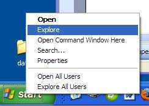
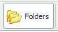
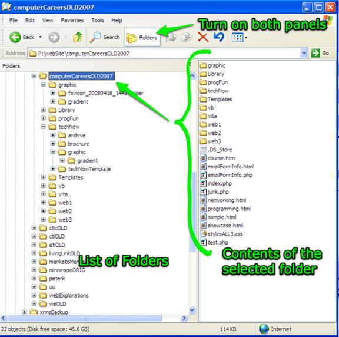
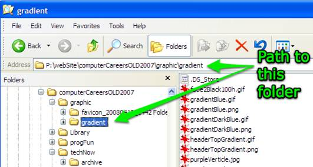

Using Windows Explorer

Probably the most popular file viewer is Windows Explorer*.A quick way to access this utility is to right-mouse click on the Start button and then chose "Explore" from the list of options.
Windows Explorer shows a list of folders as well as the files located inside each folder.

If you click on the "Folders" icon along the top of the Explorer window, two panes will display, one showing the file hierarchy and the other showing the contents of any folder that you select.Here is a screen shot showing the two panes open and the folder computerCareersOLD2007 selected:

Notice on the left how the hierarchal structure is shown as a series of dotted lines showing which set of folders is in which level. Another way to think of this would be to envision an office filing cabinet that allowed folders to fit neatly inside of others folders inside of other folders, etc.
As you work with Windows Explorer it will display the current absolute, or hard-coded) path statement.

*Don't confuse Windows Explorer with Internet Explorer (IE) which is the web browser from Microsoft.